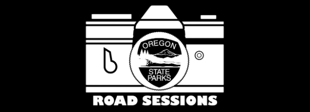
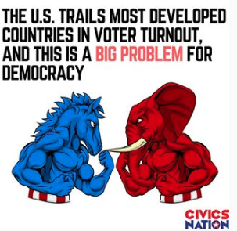
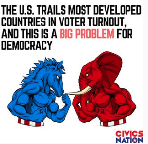
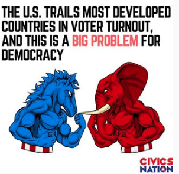

comms + design
Writing & Graphic Design Copy
Communication is about so much more than copy alone; it's about finding the best possible way to tell a story using every available tool. As a strategic communications consultant and political campaigner, I understand technology's role in


 



